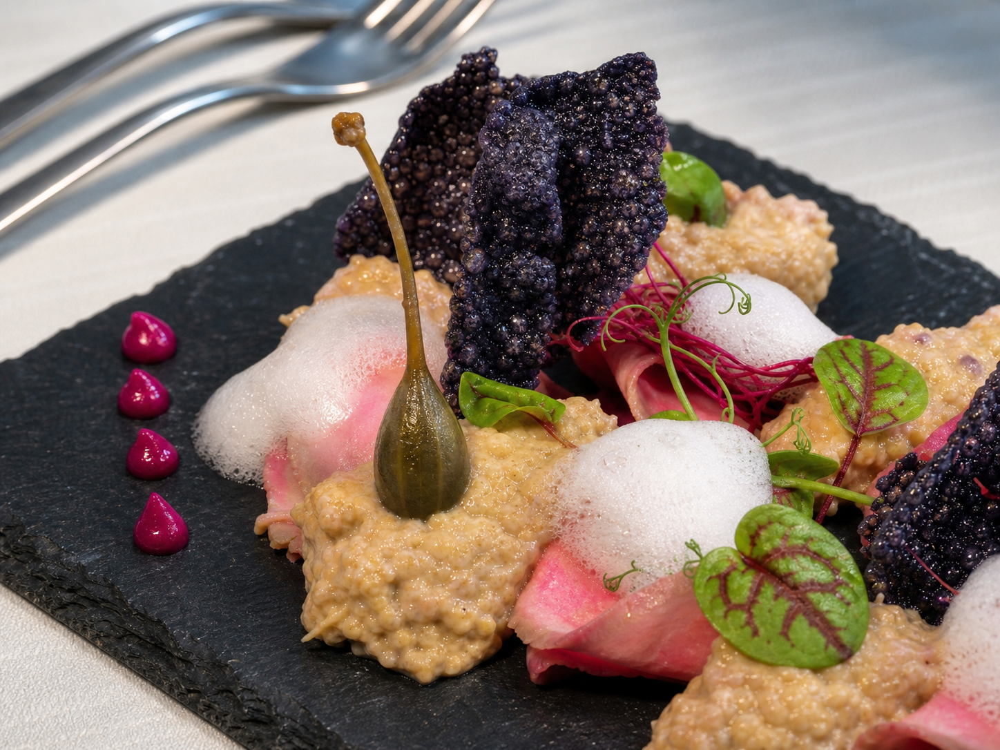
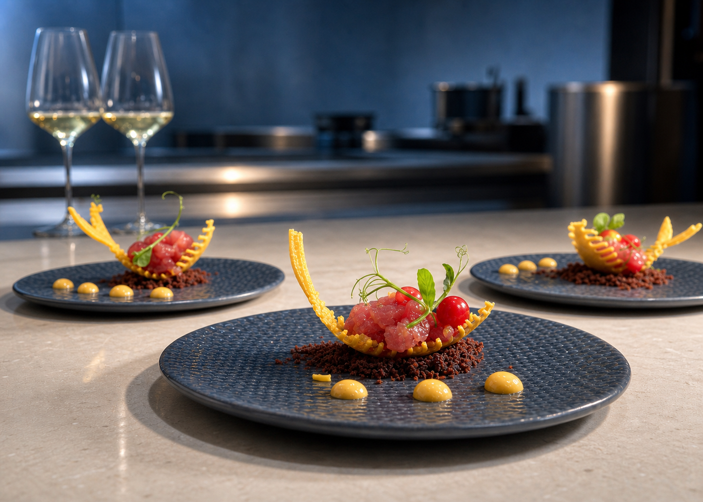
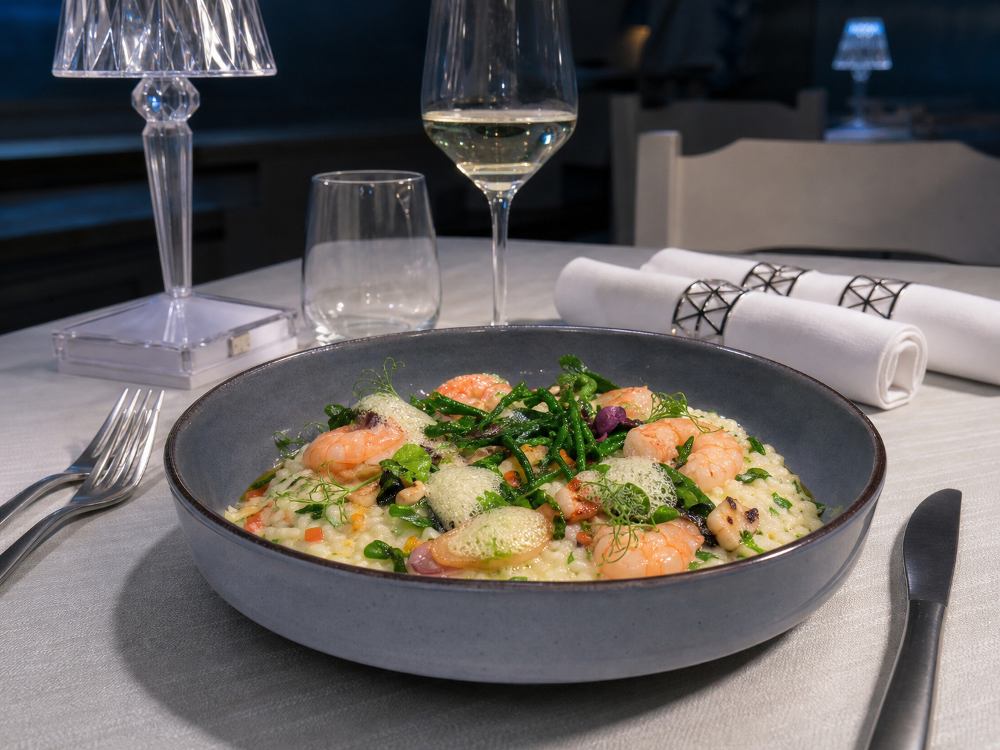
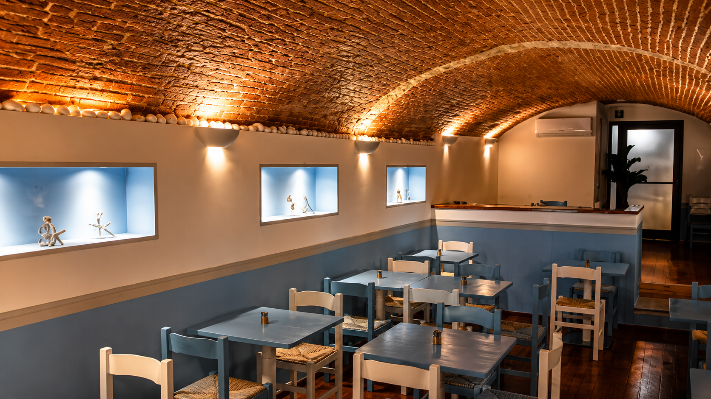

Signature
Crudi, emulsioni, vegetali marini
Tagli puliti, acidità misurate e una palette che lascia parlare il pesce.
Quiet luxury mediterranea
Coralì lavora su materia prima, stagionalità e servizio discreto. Ogni piatto nasce da ingredienti riconoscibili e viene composto con precisione, senza eccessi scenografici.
La sala accompagna lo stesso linguaggio: pietra, luce soffusa, dettagli argento e accenti azzurri che richiamano il mare senza diventare decorazione.
2025
Travellers' Choice
Varazze
Cucina di costa

Fluid gallery

Signature
Tagli puliti, acidità misurate e una palette che lascia parlare il pesce.

Ogni giorno
Pesce, sala, luce: pochi elementi, scelti bene.

Location e prenotazioni
Orari
Lunedì, Martedì19:30 - 22:00
Giovedì, Venerdì19:30 - 22:00
Sabato19:30 - 22:30
Domenica19:30 - 22:00
MercoledìChiuso
Indirizzo
Corso Cristoforo Colombo, 86
17019 Varazze SV
Telefono
019 770 3829